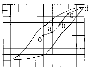
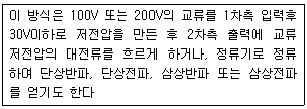
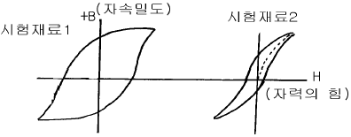
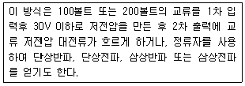

자기비파괴검사기사(구) (2003-05-25 기출문제)
1과목: 자기탐상시험원리
1. 다음 중 비파괴검사를 실시할 때 제일 먼저 고려해야 할 내용은?
- 무엇을 알고자 하는 것인지
- 언제 실시할 것인지
- 어떻게 실시할 것인지
- 어디서 실시할 것인지
(정답률: 알수없음)

2. 다음 중 자분탐상검사시의 자분 검사액에 대하여 바르게 서술된 것은?
- 자분의 분산매는 휘발성이 높아야 한다.
- 자분의 분산매는 인화점이 낮아야 한다.
- 자분의 분산매는 점도가 높고, 적심성이 좋아야한다.
- 검사액 농도는 형광자분의 경우 0.3∼1.5g/ℓ 의 농도 범위가 사용된다.
(정답률: 알수없음)
3. 자분탐상검사로 시험체의 표면하 결함을 탐상코자 한다. 다음 중 가장 적당한 자화전류와 자분은?
- 반파직류와 습식자분 적용
- 반파직류와 건식자분 적용
- 직류와 건식자분 적용
- 교류와 습식자분 적용
(정답률: 알수없음)
4. 자분탐상검사를 수행하기 위하여 자화방법을 선택할 때 고려할 사항이 아닌 것은?
- 불연속의 방향과 자속의 방향을 평행하게 하여 불연속부에 많은 누설자속이 발생하는 방법을 고려하여 선택해야 한다.
- 반자계가 생기면 시험면에 자계가 유효하게 작용하지 않아 불연속의 검출성능이 저하하므로 반자계가 생기지 않는 방법을 고려하여 선택해야 한다.
- 표면하의 불연속을 검출하거나 잔류법을 적용할 때에는 직류를 사용하여 검출성능을 높이는 방법을 고려하여 선택해야 한다.
- 스파크로 인하여 시험면에 미세한 균열이 발생할 우려가 있으므로 시험체의 재질, 시험면의 상태와 시험 후의 가공공정을 고려하여 선택해야 한다.
(정답률: 알수없음)
5. 석유저장 탱크나 구형 탱크와 같은 대형구조물의 용접부 균열 등의 불연속을 탐상하기 위하여 널리 사용되는 자분탐상 검사방법은?
- 축통전법
- 코일법
- 극간법
- 중심도체법
(정답률: 알수없음)
6. 다음 중 스트레인측정의 원리를 응용한 측정방법에 해당되지 않는 것은?
- 광탄성법
- 형광서머그래피
- 구리도금법
- 모아레법
(정답률: 알수없음)
7. 코일내 자계의 세기는 시험체를 놓는 위치에 따라 다르다. 만일 코일의 직경이 코일의 길이에 비해서 큰 경우 자계의 세기가 가장 강한 곳은?
- 코일 중간부의 내벽
- 코일 양끝의 내벽
- 코일 중간부의 중심축 부분
- 코일 양끝의 중심축 부분
(정답률: 알수없음)
8. 봉형 비자성체에 직류를 흘렸을 때 자계에 대한 다음 설명 중 옳지 않는 것은?
- 봉재 외부의 자계의 세기는 봉의 중심으로부터의 거리에 따라 감소한다.
- 외부 표면에서의 자계의 세기는 봉의 반지름이 증가할수록 증가한다.
- 전류를 2배로 증가시키면 자계의 세기도 2배가 된다.
- 자계의 세기는 봉의 중심에서 0이 된다.
(정답률: 알수없음)
9. 개선폭이 작은 뒷면따내기(Backgouging)한 면의 자분탐상검사방법으로 가장 적당한 것은?
- 극간법-건식
- 프로드법-건식
- 극간법-습식
- 프로드법-습식
(정답률: 알수없음)
10. 20[Oe]에서 자분모양이 나타나는 A형 표준시험편을 사용하여 자계의 세기가 30[Oe]가 되는 전류값을 구하려고 한다. A형 표준시험편을 시험체에 놓고 자화전류를 서서히 증가하여 400[A]에서 자분모양이 나타났다면 자화 전류값은?
- 266A
- 400A
- 600A
- 1,000A
(정답률: 알수없음)
11. 방향이 서로 다른 두 개의 자계가 한 개의 부품에 동시에 적용될 때 방향과 강도에 있어서 결과적으로 어떠한 자계가 되겠는가?
- 강한 자계의 합이 된다.
- 약한 자계가 된다.
- vector의 합인 하나의 자계가 된다.
- 균형잡힌 원형 자계가 된다.
(정답률: 알수없음)
12. 자화곡선그림에서 자분탐상검사를 위한 적정 자화범위는?

- oa
- ab
- bc
- cd
(정답률: 알수없음)
13. 자분탐상검사시 자분 분산매 첨가제로 올바른 것은?
- 계면 활성제, 방청제, 소포제
- 휘발성 물질, 환원제, 방청제
- 계면 활성제, 중성 세제, 유화제
- 소포제, 접착성 물질, 인화성 물질
(정답률: 알수없음)
14. 제품을 연마하면 연마균열이 나타나는 경우가 있는데 일반적으로 어떠한 모양으로 나타나는가?
- 연마방향과 45° 방향으로 나타난다.
- 연마방향과 90° 방향으로 나타난다.
- 연마방향과 평행하게 나타난다.
- 일정한 형태의 모양으로 나타나지 않고 방향성이 없이 나타난다.
(정답률: 알수없음)
15. 자분탐상검사를 실시할 때 검출이 곤란한 결함의 방향은?
- 코일법에 있어서 시험체의 원주방향의 표면결함
- 극간법에 있어서 자극 사이에 평행한 표면결함
- 프로드법에 있어서 전극 사이에 평행한 표면결함
- 축통전법에 있어서 축에 평행한 표면결함
(정답률: 알수없음)
16. 시험체에 자기에너지를 부여하지 않는 비파괴검사법은?
- 자기적 음향법(Magnetic Mechanical Acoustic Emission Testing)
- 전자 음향법(Electromagnetic Acoustic Testing)
- 핵자기 공명법(Nuclear Magnetic Resonance testing)
- 누설자속 탐상법(Magnetic Leakage Flux Testing)
(정답률: 알수없음)
17. 다음은 자분탐상검사시 자화 전류를 발생시키는 자화 전원부의 어떤 형식을 설명한 것이다. 이 설명에 해당하는 것은?

- 축전기 방전식
- 강압 변압기식
- One-Pulse 통전식
- 강압 정류식
(정답률: 알수없음)
18. 투자율이란?
- 금속이 자화될 수 있는 정도이다.
- 전기가 잘 통하는 정도이다.
- 전자기파가 잘 통하는 정도이다.
- 전계에 대해 반응하는 정도이다.
(정답률: 알수없음)
19. 코일법을 사용하여 자분탐상검사를 할 때 길이가 긴 시험체는 길이를 나누어서 검사를 해야 한다. 이 때 나누는 길이의 최대치는?
- 8인치(200mm)
- 10인치(250mm)
- 12인치(300mm)
- 18인치(450mm)
(정답률: 알수없음)
20. 강자성체에 자장을 서서히 증가시킬 때, 재질내에 존재하는 자구(Magnetic domain)의 방향에 의한 영향으로 자화가 연속적으로 되지 않고 계단식으로 되는 현상을 무엇이라 하는가?
- 표피효과(Skin effect)
- 홀효과(Hall effect)
- 박하우젠효과(Barkhausen effect)
- 모서리 효과(Edge effect)
(정답률: 알수없음)
2과목: 자기탐상검사
21. 올스테드(Oersted)와 가우스(Gauss)는 자장의 세기와 자속밀도를 측정하는 단위이다. 다음 중 그 수치가 같다고 생각되는 곳은?
- 철강의 표면
- 막대자석의 양극사이의 중간점
- 공기 중에서
- 용접부내에 텅스텐이 개재된 곳
(정답률: 알수없음)
22. 탐상결과 시험품에 여러 가지 불연속들이 나타나면 첫 번째 조치할 내용은?
- 시험품을 폐기해야 한다.
- 불연속들을 제거한 후에 시험품을 사용해야 한다.
- 불연속의 적용 허용기준 요건에 의해 판정되어야 한다.
- 균열의 깊이를 확인하기 위하여 다른 비파괴 검사를 한다.
(정답률: 알수없음)
23. 실린더형의 제품에 축전도체를 삽입시켜 자화시켰을 때 자화력의 세기가 가장 크게 예상되는 부위는?
- 실린더 외면
- 실린더 두께의 1/2 지점
- 실린더 양끝 단
- 실린더 내면
(정답률: 알수없음)
24. 원형자화법으로 검사한 부품을 탈자할 경우 다음 중 먼저 고려해야 할 행위는?
- 재료의 자기이력 상태
- 선형자화시킨 후 탈자 시행
- 방향이 계속 바뀌는 자장을 이용하여 탈자
- Head shot에 장치한 후 반파정류를 사용한 단계별 전류 감소법으로 탈자
(정답률: 알수없음)
25. 습식자분 사용시 그 특징이 아닌 것은?
- 건식자분보다 재사용성이 좋다.
- 검사후 후속공정에 잔류자분으로 인한 제거성이 나쁘다.
- 미세한 표면균열 검사에 좋다.
- 자분액의 농도로 인한 유동성이 나쁘다.
(정답률: 알수없음)
26. 습식자분탐상용 검사액의 자분분산 농도가 결함 검출능력에 미치는 영향의 설명으로 옳지 못한 것은?
- 자분의 입도가 작으면 자분농도는 엷은 것이 좋다.
- 검사액의 적용시간이 길면 자분농도는 엷은 것이 좋다.
- 검사품의 표면이 거칠면 자분농도는 짙은 것이 좋다.
- 자분농도가 너무 짙으면 의사무늬가 나타나기 쉽다.
(정답률: 알수없음)
27. 자분탐상시험에서 자분모양이 나타났다. 이것은 어떠한 의미를 갖는지 정확한 해석은?
- 그 위치 표면에 결함이 있음을 나타낸다.
- 그 위치 내부에 결함이 있다.
- 그 위치 표층부에 결함이 나타난 것으로 판정한다.
- 자분모양이 나타난 것만으로 결함이라고 단정할 수 없다.
(정답률: 알수없음)
28. 자분탐상시험시 자분의 필요성은 절대적이다. 자분이 구비하여야 할 조건 중 틀린 것은?
- 정교하고 미세한 분말이어야 한다.
- 높은 투자율을 가져야 한다.
- 높은 보자성을 가져야 한다.
- 자분에 독성이 없어야 한다.
(정답률: 알수없음)
29. 원통의 내면을 잘 자화하는 자분탐상검사 방법은?
- 축통전법
- Prod 법
- 전류관통법
- 극간법
(정답률: 알수없음)
30. 자분탐상검사시 다음 중 가장 검출이 용이한 불연속의 형태는?
- 길이와 높이의 비가 4 : 1
- 길이와 높이의 비가 3 : 1
- 길이와 높이의 비가 2 : 1
- 길이와 높이의 비가 1 : 1
(정답률: 알수없음)
31. 다음 중 자분탐상시험의 가장 효과적인 용도는?
- 철금속의 내부, 외부 불연속을 검출할 수 있다.
- 철금속의 표면결함을 검출할 수 있다.
- 비철금속의 내부, 외부 불연속을 검출할 수 있다.
- 비철금속의 표면결함을 검출할 수 있다.
(정답률: 알수없음)
32. 시험재료1의 자기이력곡선에 비하여 시험재료2의 자기이력곡선이 나타내는 것은?

- 항자력이 높다.
- 보자성이 높다.
- 투자율이 높다.
- 잔류자속 밀도가 높다.
(정답률: 알수없음)
33. 다음 용접부의 검사 중에서 자분탐상시험이 적합하지 않은 것은?
- 개선면 검사
- 뒷면 따내기한 면의 검사
- 용접 중간층 검사
- 용접 후 라미네이션 검사
(정답률: 알수없음)
34. 다음 내용은 자화전류를 발생시키는 자화 전원부의 어떤 형식을 설명한 것인가?

- 축전기 방전식
- One-Pulse 통전식
- 강압 변압기식
- 강압 정류식
(정답률: 알수없음)
35. 일반적으로 사용하는 자분탐상용 검사액의 농도 단위는?
- g /100mℓ
- g /100kg
- mℓ /100mℓ
- mℓ /100kg
(정답률: 알수없음)
36. 다음 중 국부적인 자계나 누설자속 밀도를 측정하는 검출기의 명칭은?
- Inspection Coil
- EMAT
- Tesla meter
- Flux Induced Coil
(정답률: 알수없음)
37. 자분탐상시험 중 직접 통전방식이 아닌 것은?
- 요크법
- 축통전법
- 프로드법
- 직각통전법
(정답률: 알수없음)
38. 길이 30㎝, 직경 8㎝되는 시험품을 자분 탐상코일로 선형 자화하고 싶다. 코일의 감긴 수가 6회전일 때 요구되는 전류 값은?
- 10,000 Ampere
- 5,000 Ampere
- 2,000 Ampere
- 1,000 Ampere
(정답률: 알수없음)
39. 다음 중 자분탐상검사에서 결함 검출능이 높은 경우는?
- 투자율이 큰 재료일수록 검출능이 높다.
- 자기 포화점에서 검출능이 높다.
- 자속 밀도가 낮을수록 검출능이 높다.
- 자분 입도가 클수록 검출능이 높다.
(정답률: 알수없음)
40. 원형 자화법으로 표면하 결함을 검출하기 위해서는 교류 대신 직류를 사용하는데 그 이유는?
- 자분의 유동성과는 무관하기 때문에
- DC는 AC보다 자분의 자기포화점이 높기 때문에
- AC는 표피효과에 의해 검출깊이의 한계를 갖고 있기때문에
- DC는 반자장의 영향을 적게 받기 때문에
(정답률: 알수없음)
3과목: 자기탐상관련규격및컴퓨터활용
41. ASME Sec.V Art.8, App.I에서 규정한 대비시험편이 포함하는 100% 관통 드릴구멍의 직경은? (단, 시험편 외경이 3/4인치 이하인 경우)
- 0.022인치
- 0.032인치
- 0.042인치
- 0.⑤2인치
(정답률: 알수없음)
42. 다음의 서버에 대한 설명이 잘못된 것은?
- SMTP 서버 : 메일러로부터 전자우편을 받아서 상대방의 SMTP 서버로 보낸다.
- FTP 서버 : 파일의 송수신을 지원한다.
- Proxy 서버 : 특정 조식의 랜과 외부 네트워크 사이에서 방화벽 역할을 수행하며, 동시에 여러 외부 서버의 데이터를 대신 받아주는 역할을 한다.
- Gopher 서버 : 원격 시스템 접속을 지원한다.
(정답률: 알수없음)
43. ASME Sec.V에 따르면 두께 19㎜ 이상인 시험체에서 Prod법을 수행할 때의 적합한 조건은?
- Prod 간격은 2~5인치, 간격 1인치당 전류는 100~125A
- Prod 간격은 6~8인치, 간격 1인치당 전류는 50~100A
- Prod 간격은 3~5인치, 간격 1인치당 전류는 50~100A
- Prod 간격은 6~8인치, 간격 1인치당 전류는 100~125A
(정답률: 알수없음)
44. ASME 규격에서 자분탐상시험시 습식 자분을 사용할 경우 시험편의 표면온도는 몇 도를 초과하지 말아야 하는가?
- 135°F
- 175°F
- 400°F
- 600°F
(정답률: 알수없음)
45. ASME 규격에 따른 자장지시계(Magnetic Particle Field Indicator)에 대한 내용중 틀린 것은?
- 한쪽면이 0.01인치의 두께로 구리도금 되어 있다.
- 인공홈의 너비는 최대 1/32인치이다.
- 삼각형 모양(파이모양)의 저탄소강을 8개 붙여 만들었다.
- 두께는 1/4인치이다.
(정답률: 알수없음)
46. ASTM E 749에서 규정한 자분 검사액의 점도(viscosity)는 얼마를 초과해서는 안되는가?
- 2.5mm2/s
- 5mm2/s
- 10mm2/s
- 20mm2/s
(정답률: 알수없음)
47. ASME Sec.V에서 습식 자분용액의 주기적인 오염도 시험은 최소 몇 일 이내의 간격으로 시험하여야 하는가?
- 7일
- 15일
- 30일
- 90일
(정답률: 알수없음)
48. 잔류법에서 습식자분을 시험체에 적용하는 시기로 알맞는 것은?
- 자화 직전에
- 자화 중에
- 자화 후에
- 아무 때나
(정답률: 알수없음)
49. 다음의 설명 중 내용이 옳은 것은?
- 잔류법이란 영구자석을 접속시켜 주면서 자분의 적용을 완료하는 방법
- 연속법이란 자화전류를 단절시킨 후에 자분의 적용을 행하는 방법
- A형 표준시험편상의 자분모양으로 자분의 성능을 알 수 있다.
- 건조시킨 자분을 액체 용매에 현탁시켜서 시험하는 방법을 건식법이라고 한다.
(정답률: 알수없음)
50. KS D 0213의 시험편에 대한 설명으로 옳은 것은?
- A형 표준시험편은 용접부의 개선면 등의 좁은 부분에 사용하는 것이 목적이다.
- A형 표준시험편의 크기는 한변이 15mm인 정사각형이다.
- B형 대비시험편은 장치, 자분 및 검사액의 성능을 조사하는데 사용한다.
- C형 표준시험편의 C1은 A2-7/50에 근사한 값의 유효 자계에 자분모양이 나타난다.
(정답률: 알수없음)
51. 인터넷 상에서 사용자가 원하는 키워드를 입력하여 사이트를 찾고자 할 때 사용할 프로그램은?
- 즐겨찾기
- 검색엔진
- 목록보기
- 인터넷옵션
(정답률: 알수없음)
52. 윈도우 운영체제에서 디스크의 단편화를 제거하기 위한 목적의 프로그램은?
- 디스크 검사
- 디스크 정리
- 디스크 조각모음
- 디스크 공간 늘림
(정답률: 알수없음)
53. KS D 0213에서 자기회로가 시험품내에서 폐회로가 되어 반자장이 생기지 않으므로 시험품을 효과적으로 자화할 수 있는 검사 방법으로서 시험체의 축방향에 직접 전류를 흐르게 하는 자화방법은?
- 전류관통법
- 자속관통법
- 축통전법
- 요크법
(정답률: 알수없음)
54. 다음에 설명된 자분모양 중 KS D 0213에서 연속한 자분모양으로 분류되는 것은?
- 균열에 의해 나무가지 모양으로 연결되어 나타난 자분모양으로 그 길이가 30mm인 자분지시
- 기공에 의해 나타난 직경이 1mm인 지시 3개가 1mm 간격으로 일렬로 나타난 자분지시
- 길이가 25mm, 나비가 2mm인 지시와 길이가 5mm, 나비가 2mm인 지시가 5mm 간격으로 나타난 지시
- 용입부족에 의해 길이가 50mm로 길게 연결된 선형지시
(정답률: 알수없음)
55. 인터넷의 개념과 관련이 없는 것은?
- 수많은 사람이나 기관과 연결할 수 있는 개방구조이다.
- 독자적인 주소를 할당받는다.
- 전세계 통신망들이 합쳐진 네트워크의 네트워크이다.
- 단일 운영체제로 연결된 네트워크 통신망이다.
(정답률: 알수없음)
56. 전자우편을 이용할 때 사용자의 컴퓨터에서 다른 시스템에 도착한 전자우편을 볼 수 있도록 하는 프로토콜은?
- POP3
- SMTP
- NMTP
- HTTP
(정답률: 알수없음)
57. 자기펜 자국(Magnetic writing)의 원인을 설명한 것은?
- 자화 케이블 등이 시험면에 접촉할 때
- 단면적의 급변으로 생긴 누설자속에 의해
- 잔류법에 있어서 시험품이 서로 접촉한 경우
- 극간법에서 자극의 접촉부에 생기는 누설자속에 의해
(정답률: 알수없음)
58. ASME code에서 외경이 5인치 초과 10인치까지의 시험편에 대하여 직접 접촉법에 의한 원형자화법 사용시 전류는 외경 인치당 몇 암페어를 적용하는가?
- 100 ∼ 300 암페어/인치
- 300 ∼ 800 암페어/인치
- 800 ∼ 1,200 암페어/인치
- 1,200 ∼ 1,500 암페어/인치
(정답률: 알수없음)
59. ASME Sec.V 규격에서 비형광자분으로 시험할 때, 시험체 표면에서의 밝기 규정은 최소 몇 룩스(Lux)인가?
- 500
- 1000
- 20
- 200
(정답률: 알수없음)
60. KS D 0213에 따르면 시험장치(자외선 조사장치, 전류계, 타이머)의 점검주기는?
- 8시간
- 3개월
- 6개월
- 1년
(정답률: 알수없음)
4과목: 금속재료학
61. 자석강이 아닌 것은?
- NKS강
- Koster강
- MK강
- Vanity강
(정답률: 알수없음)
62. 귀금속에 속하지 않는 것은?
- 철
- 금
- 은
- 백금
(정답률: 알수없음)
63. 탄소강에서 상온취성(cold shortness)의 원인이 되는 원소는?
- 황(S)
- 인(P)
- 규소(Si)
- 망간(Mn)
(정답률: 알수없음)
64. 석출경화형 스테인리스강인 것은?
- SS 형
- RS 형
- EF 형
- PH 형
(정답률: 알수없음)
65. 스프링강으로 가장 적당한 조직은?
- 페라이트
- 오스테나이트
- 솔바이트
- 시멘타이트
(정답률: 알수없음)
66. 활자(Type metal)합금은?
- Cu-Sb-Zr
- Fe-Zn-Sb
- Pb-Sb-Sn
- Al-Se-Zn
(정답률: 알수없음)
67. 세라다이징(sherardizing)은 어느 금속을 철강제품의 표면에 확산 피복시킨 것인가?
- Cr
- Aℓ
- Si
- Zn
(정답률: 알수없음)
68. 델타 메탈(delta metal)의 설명이 틀린 것은?
- 주물이나 단조재로 사용되며 고온가공성이 양호하다.
- 6:4 황동에 1% 내외의 Fe 가 포함된 것이다.
- Cu 54∼58%, Sn 40∼43%, Mg 1% 이내의 합금이다.
- 내식성이 우수하므로 선박, 광산, 수력기계, 화학 기계 볼트 너트 등에 사용된다.
(정답률: 알수없음)
69. 마우러 조직도(maurer diagram)란?
- 주철에서 C 와 Si 양에 따른 주철의 조직 관계
- 주철에서 C 와 P 양에 따른 주철의 조직 관계
- 주철에서 C 와 Mn 양에 따른 주철의 조직 관계
- 주철에서 C 와 S 양에 따른 주철의 조직 관계
(정답률: 알수없음)
70. 아연의 성질을 올바르게 설명한 것은?
- 주조상태에서는 조대결정이 되므로 연신이 낮고 취약 하여 상온가공이 어렵다.
- 체심입방격자이며 고온에서 증기압이 낮다.
- 건조한 공기중에서는 산화가 잘되며 산, 알칼리에 강하다.
- Fe가 0.008% 이상이 되면 연질의 FeZn7상이 나타나 인성과 인장강도를 증가시킨다.
(정답률: 알수없음)
71. Silumin의 개량 처리법에 있어서 미량의 Na 첨가에 대한 설명 중 가장 옳은 것은?
- 과냉현상과 결정성장의 저지에 의한다.
- 융체화 처리에 따른 공공(vacancy)의 형성에 의한다.
- 풀림에 따른 응고핵발생수의 증가에 의한다.
- 풀림 처리에 따른 결정립성장에 의한다.
(정답률: 알수없음)
72. 주물용 Aℓ 청동에 대한 설명 중 틀린 것은?
- 고력황동을 사용해서 만든 프로펠러 보다 중량을 10∼20% 가볍게 할 수 있다.
- 내해수성이 좋아 대형 프로펠러를 만들수 있다.
- 경도, 내마모성이 나쁘다.
- 화학 공업장치 분야에 사용된다.
(정답률: 알수없음)
73. 고력황동의 조직으로 맞는 것은?
- δ + α
- α + σ
- α + β
- β + γ
(정답률: 알수없음)
74. 서브 제로(sub-zero)에 대한 설명 중 맞지 않는 것은?
- 0℃이하의 온도에서 냉각시키는 조작이다.
- 마텐자이트변태를 중지시키기 위한 것이다.
- 마텐자이트변태를 진행시키기 위한 것이다.
- 심냉처리라고도 한다.
(정답률: 알수없음)
75. 열전대로 사용되는 Alumel 이란 어느 계통의 합금인가?
- Ni-Aℓ -Fe 합금
- Aℓ -Cr-Co 합금
- Ni-Mg -Cu 합금
- Aℓ -Mn-Pb 합금
(정답률: 알수없음)
76. 피검면의 상황을 셀루로이드피막에 옮겨서 이것을 현미경으로 검사하는 방법은?
- EDT 법
- IMPULES 법
- UT - NDT 법
- SUMP 법
(정답률: 알수없음)
77. 와이(Y)합금을 올바르게 설명한 것은?
- Aℓ -Zn 합금에 소량의 Mg 과 Mn을 첨가한 내열성합금
- Aℓ -Cu 합금에 소량의 Mg 과 Ni를 첨가한 내열성합금
- Aℓ -Si 합금에 소량의 Mg 과 Pb을 첨가한 내열성합금
- Aℓ -Fe 합금에 소량의 Mg 과 Sn을 첨가한 내열성합금
(정답률: 알수없음)
78. Fe3C의 금속간 화합물에 있어서의 탄소의 원자비는?
- 25%
- 40%
- 60%
- 85%
(정답률: 알수없음)
79. 열처리 목적에 적합하지 않는 것은?
- 조직을 연화시키거나 기계가공에 적합한상태로 한다.
- 조직을 조대화시키고 방향성을 크게하며 편석을 많게 한다.
- 냉간가공 후 나쁜 영향을 제거한다.
- 조직을 안정화시키고 내식성을 개선시킨다.
(정답률: 알수없음)
80. Ti 제련시 사염화티타늄(TiCl4)을 환원하여 스폰지(sponge)티탄을 얻는데 사용하는 환원제는?
- Aℓ
- Mg
- Cu
- Si
(정답률: 알수없음)
5과목: 용접일반
81. 용접기의 1차 입력이 20kVA 이고 전원 전압이 200V일 때, 용접기 1차측 안전 스위치로 가장 적합한 것은?
- 100A
- 10A
- 5A
- 0.1A
(정답률: 알수없음)
82. 강 용접물의 용접 변형에 영향을 주는 것이 아닌 것은?
- 용접입열
- 강의 상변태
- 용착량
- 용접결함
(정답률: 알수없음)
83. 다음의 용접법 중에서 전기적인 아크(Arc)에너지를 이용하는 것은?
- 테르밋 용접
- 플라즈마 용접
- 일렉트로슬래그 용접
- 프로젝션 용접
(정답률: 알수없음)
84. 플라스마 제트 용접의 특징 중 틀린 것은?
- 열에너지의 집중이 좋다.
- 용접속도가 빠르다.
- 맞대기 용접에서 모재 두께의 제한을 받지 않는다.
- 각종 재료의 용접이 가능하다.
(정답률: 알수없음)
85. 가스용접에서 좌(전)진법에 대한 설명으로 틀린 것은?
- 용접속도는 우진법에 비하여 느리다.
- 소요 홈각도는 우진법에 비하여 작다.
- 용접 변형은 우진법에 비하여 크다.
- 열 이용률은 우진법에 비하여 나쁘다.
(정답률: 알수없음)
86. 산소-아세틸렌 가스 절단시 절단조건으로 설명이 잘못된것은?
- 모재 중 불연소물이 적을 것
- 슬랙의 유동성이 좋고 쉽게 이탈할 것
- 모재의 연소온도가 용융온도보다 높을 것
- 슬랙의 용융온도가 모재의 용융온도보다 낮을 것
(정답률: 알수없음)
87. 탄산가스 용접시 와이어 돌출길이가 적당해야 용접이 잘된다. 용접전류 200[A] 미만일 때 다음 중 몇 mm 정도면 적당한가?
- 5 ∼ 7
- 10 ∼ 15
- 20 ∼ 25
- 25 ∼ 30
(정답률: 알수없음)
88. 아세틸렌 가스에 대한 설명 중 틀린 것은?
- 공기보다 가볍다.
- 순수한 아세틸렌 가스는 무색 기체이다.
- 불순물인 황화수소 등을 포함하고 있어 악취가 난다.
- 물에는 25배정도 용해되어서 용해 아세틸렌으로 만들어 용접에 이용되고 있다.
(정답률: 알수없음)
89. 저수소계, 일미나이트계, 티탄계, 고산화철계 용접봉의 용접성에 대한 설명으로 틀린 것은?
- 내균열성은 피복제의 염기도가 높을수록 양호하다.
- 작업성은 피복제의 염기도가 높을수록 향상된다.
- 내균열성은 저수소계가 가장 좋다.
- 티탄계는 내균열성은 가장 나쁘다.
(정답률: 알수없음)
90. 다음 설명 중 저수소계 용접봉의 특징이 아닌 것은?
- 탄산칼슘(CaCO3), 불화칼슘(CaF2)이 주성분이다.
- 아크에 탄산가스 분위기를 주어 용착금속에 용해되는 수소량을 적게 한다.
- 용착 금속은 기계적성질, 내균열성이 우수하다.
- 아크가 안정되어 작업성이 우수하다.
(정답률: 알수없음)
91. 아크전류가 300A 아크전압이 25V 용접속도가 20cm/min인 경우 용접길이 1cm당 발생되는 용접입열은 몇 J/cm인가?
- 20000
- 22500
- 25500
- 30000
(정답률: 알수없음)
92. 다음 중 아크 특성에 관한 설명 중 틀린 것은?
- 음극구역 전압강하는 양극구역 전압강하보다 많이 일어난다.
- 아크의 특성은 용접봉의 조성, 보호가스 등에 관계없이 일정하다.
- 양극과 음극사이의 아크 간격이 길어지면 전압강하는 증가한다.
- 양극구역 전압강하는 아크 길이 및 전류에 관계없이 거의 일정하다.
(정답률: 알수없음)
93. 아크용접 작업에서 아크시간이 7분, 휴식시간이 3분이라 할 때 실제 사용률(duty cycle)은 몇 % 가 되는가?
- 30
- 43
- 70
- 93
(정답률: 알수없음)
94. 용접봉 용제(Flux)의 종류에 따라서 용접금속의 충격치가 다르다. 다음중 그 값이 가장 우수하게 나오는 계(系)는 어느 것인가?
- 일미나이트계(ilmenite계)
- 산화철계(酸化鐵系)
- 티타니아계(titania계)
- 저수소계(低水素系)
(정답률: 알수없음)
95. 서브머지드 아크용접시 아크의 길이가 길어지면 어떤 현상이 일어나는가?
- 용입이 얕고 폭이 넓어진다.
- 오버랩이 발생한다.
- 용입이 깊어진다.
- 용접비드가 좁아진다.
(정답률: 알수없음)
96. 용접부를 피닝하는 주목적으로 가장 적합한 것은?
- 모재의 재질을 검사한다.
- 미세한 먼지 등을 털어 낸다.
- 응력을 강하게 하고 변형을 크게 한다.
- 용접부의 잔류응력을 완화하고 변형을 방지한다.
(정답률: 알수없음)
97. 현장에서 많이 사용하고 있는 일반적인 용해 아세틸렌에 대한 설명 중 틀린 것은?
- 발생기 아세틸렌에 비하여 불안정하다.
- 일정온도 이상이 되면 산소가 없어도 폭발한다.
- 아세틸렌가스를 아세톤에 용해시킨것이다.
- 발생기 아세틸렌보다 고순도이다.
(정답률: 알수없음)
98. 일반적인 불활성가스 아크용접에 속하지 않는 것은?
- TIG 아크용접
- 알곤 아크용접
- 캐스케이드 아크용접
- MIG 아크용접
(정답률: 알수없음)
99. 피복 금속 아크용접봉의 용융속도에 관한 설명 중 잘못된것은?
- 아크 전류에 비례한다.
- 아크 전압에 비례한다.
- 같은 전류의 경우 봉의 크기와 무관하다.
- 심선이 같더라도 피복제에 따라 다르다.
(정답률: 알수없음)
100. 용접 제품에서 잔류응력의 영향이 아닌 것은?
- 취성파괴의 원인이 된다.
- 응력부식의 원인이 된다.
- 박판 구조물에서는 국부 좌굴을 촉진한다.
- 사용 중에는 변형의 원인은 되지 않는다.
(정답률: 알수없음)